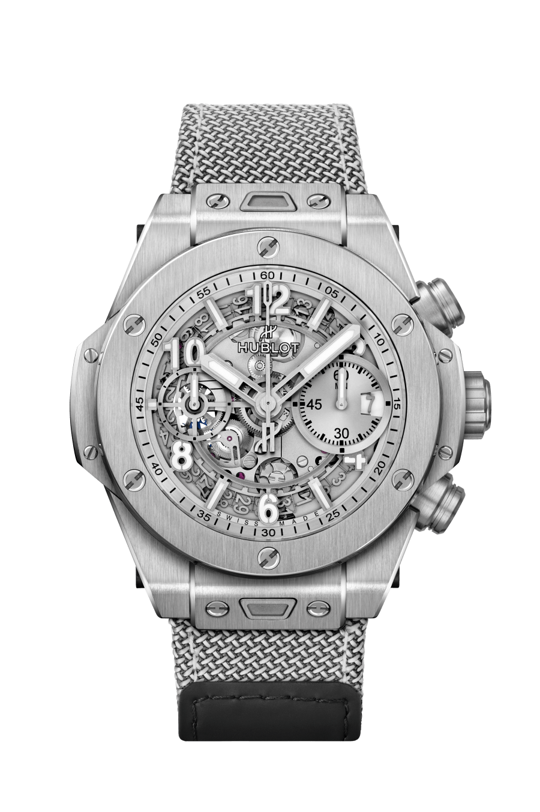

The case of the Big Bang Meca-10 is crafted from King Gold, a proprietary alloy developed by Hublot. King Gold is an exclusive blend of 18k gold and other precious metals, resulting in a unique and distinctive reddish hue that exudes opulence. The 45mm case diameter provides a commanding presence on the wrist, making a bold and confident statement.

The case of the Classic Fusion Titanium is crafted from lightweight and durable titanium, a material known for its exceptional strength-to-weight ratio. Titanium offers a distinct grayish color and a sleek, satin-finished surface, giving the watch a modern and understated look. The 42mm case diameter strikes a perfect balance between classic proportions and contemporary wearability, making it suitable for various wrist sizes and occasions.

The Hublot Big Bang Essential Grey 42mm is a bold and versatile watch that combines contemporary design with exceptional craftsmanship. Its sleek and understated aesthetic, coupled with its robust functionality, makes it a perfect choice for those seeking a timepiece that effortlessly blends sportiness and elegance. Whether worn for formal occasions or everyday wear, the Big Bang Essential Grey is a testament to Hublot's commitment to creating unique and captivating timepieces.